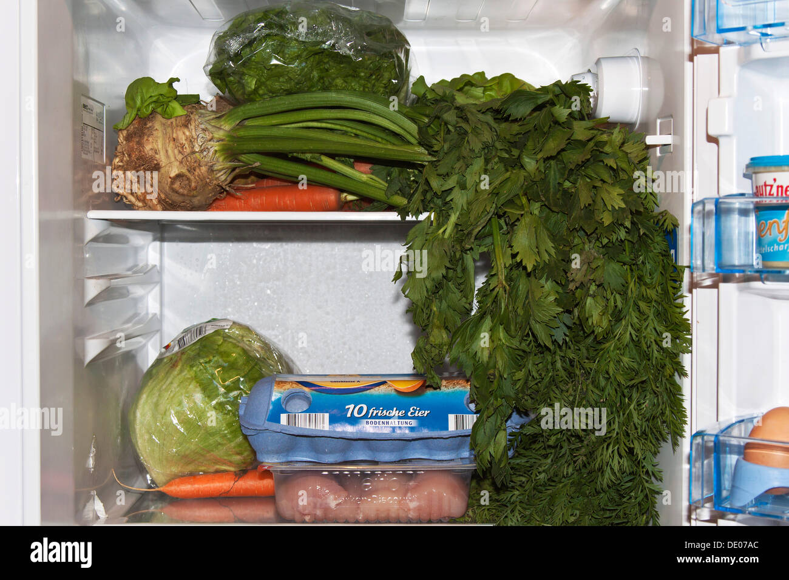
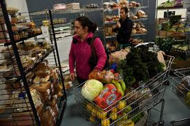
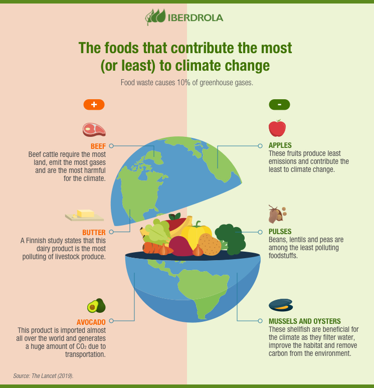
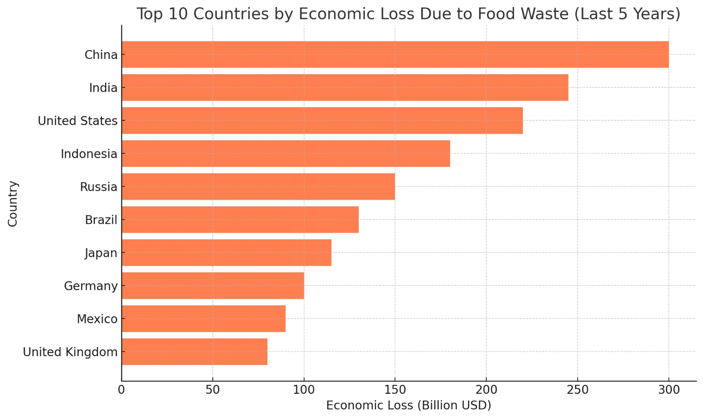
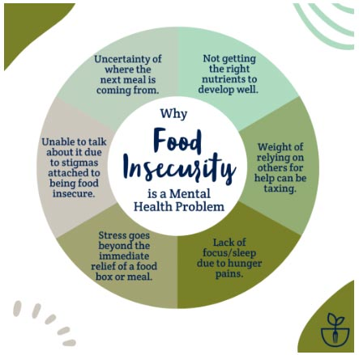

Main Causes of Food Wastage
1. Improper Storage and Transportation
Many perishable foods spoil during transportation and storage due to inadequate temperature control, lack of refrigeration, and poor handling practices. This is especially prevalent in countries with insufficient infrastructure for cold storage and transportation, leading to significant waste before the food even reaches consumers.
2. Consumer Behavior and Over-Purchasing
In developed countries, a large portion of food waste occurs at the consumer level. Factors like over-purchasing, improper meal planning, and the tendency to discard food nearing expiration all contribute to wastage. Restaurants and food service establishments also play a role, often over-preparing food to avoid running out, which leads to excessive waste.
Effects of Food Wastage
1. Environmental Impact
Food waste significantly contributes to greenhouse gas emissions. When food decomposes in landfills, it releases methane, a potent greenhouse gas that contributes to climate change. Additionally, the resources used to produce wasted food—such as water, energy, and labor—are also wasted, further straining the environment.
2. Economic Loss
Food wastage results in substantial economic losses. Both producers and consumers lose money when food is wasted, with losses estimated at hundreds of billions of dollars globally each year. Farmers lose income on discarded crops, retailers lose unsold goods, and consumers spend money on food that is ultimately thrown away.
3. Food Insecurity
With so much food wasted, there is a missed opportunity to feed those in need. Reducing food waste could improve food availability and affordability, particularly in regions where food insecurity is a significant issue. Redirecting edible food that would otherwise be wasted could help combat hunger and malnutrition.
